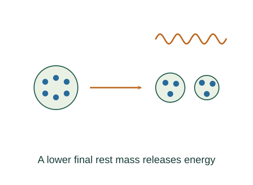

Calculate energy released by fission or fusion
Fission and fusion release energy when the final collection of particles has lower total rest mass. Binding-energy changes provide the same accounting in a different form.
What the symbols mean
Q: released energy per reaction; Nreactions: number of completed reactions; NA: Avogadro constant; Mmol: molar mass.
When this applies
A specified balanced reaction with all products included and consistent mass conventions. Sample totals assume the stated fraction of fuel actually reacts.
Developing the argument

Balance the reaction first
Conserve electric charge, nucleon number where applicable, and all relevant particles and quantum numbers. A mass difference has meaning only for the complete specified reaction.
Subtract total final mass from total initial mass
Multiply the difference by c². Alternatively, for reactions conserving nucleons, subtract total initial binding energy from total final binding energy.
A closer lookDerive binding energy from mass defect ↗Count reaction events in the fuel
For one reacting nucleus per event, a pure sample of mass Msample contains (Msample/Mmol)NA target nuclei. Stoichiometry can require a different event count.
Convert units and multiply
Use joules per event before multiplying if power or total energy is needed. An electronvolt is e joules; a megaelectronvolt is 10⁶ times larger.
A worked example
If a reaction releases 200 MeV, that is about 3.20 × 10⁻¹¹ J per event. One mole of such events releases about 1.93 × 10¹³ J.
Derivation behind this calculation ↗A point to keep straight
Q is not always energy deposited locally: neutrinos or escaping radiation can carry part away. Thermal-to-electric conversion adds a separate efficiency.
Check the assumptions and derivation ↗